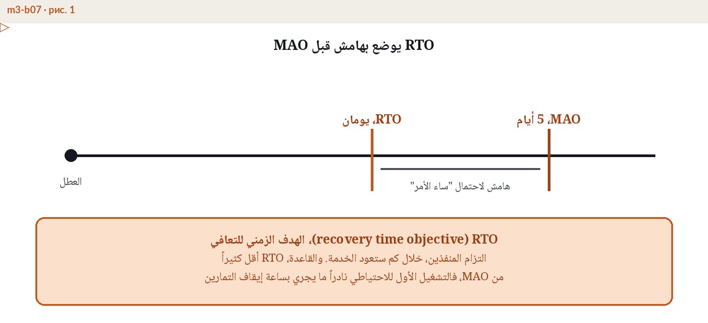

RTO وRPO وMAO وMBCO، أهداف التعافي بالأمثلة
لماذا أربعة أرقام، ومن يعتمدها
عبارة "سنستعيد الخدمة بأسرع ما يمكن" ليست خطة بل أمنية. يصبح التعافي قابلا للإدارة عندما يصاغ كأهداف رقمية: كم تتحمل الشركة من الانقطاع (MAO)، وبأي سرعة يجب استعادة العملية (RTO)، وكم من البيانات يمكن فقدانه (RPO)، وما الحد الأدنى من الخدمة الواجب تقديمه أثناء التعافي (MBCO). يقترح مالكو العمليات هذه الأرقام استنادا إلى تحليل أثر الأعمال (BIA)، وتراجعها الإدارة المالية مقابل كلفة التوقف، وتعتمدها الإدارة التنفيذية، ويرى مجلس الإدارة الصورة الإجمالية. ثم تنعكس الأرقام المعتمدة في قرارات البنية التقنية واتفاقيات مستوى الخدمة مع الموردين وخطط الاختبار.
MAO، حدود ما لا يمكن قبوله
الحد الأقصى المقبول للانقطاع هو أطول مدة يمكن أن تتوقف فيها العملية قبل أن يصبح الضرر غير مقبول: غرامات تعاقدية، مخالفة تنظيمية، خطر على سلامة المرضى، فقدان عملاء لا يعودون. وتسمي بعض المعايير الحد نفسه MTPD، أي الفترة القصوى المحتملة للاضطراب. بعد هذا الخط لم تعد تدير حادثا، بل تدير بقاء الشركة. ويأتي MAO من تحليل الأعمال لا من إدارة التقنية، لأنه يعكس ما يتحمله العملاء والعقود والجهات الرقابية.

RTO داخل MAO وبهامش أمان
الهدف الزمني للتعافي هو الزمن المستهدف لاستعادة العملية، ويجب أن يقع داخل MAO وبهامش، لأن التعافي الحقيقي يتأخر دائما: شخص أساسي لا يمكن الوصول إليه، خطوة تفشل، اعتماد خفي يفاجئك. وهامش يعادل 30-50% من MAO قاعدة عملية معقولة. السرعة تشترى ولا تعلن، فكلما قصر RTO ارتفعت كلفة البنية الاحتياطية خلفه، ولهذا يعتمد RTO مع سعره في القرار نفسه.

RPO وتواتر النسخ
هدف نقطة الاستعادة يحدد سقف فقدان البيانات مقاسا بالزمن. فالقول إن RPO يساوي 5 دقائق يعني أن آخر نسخة صالحة من البيانات لا يزيد عمرها على 5 دقائق، وهو ما يفرض نسخا أو مزامنة بهذا التواتر على الأقل. ويجيب RTO وRPO عن سؤالين مختلفين: RTO عن موعد عودة الخدمة للعملاء، وRPO عن حجم بياناتهم الذي نجا. والنسخة الاحتياطية التي لم تسترجع يوما في اختبار لا تحسب نسخة احتياطية.
MBCO، الحد الأدنى من مستوى الخدمة
الهدف الأدنى لاستمرارية الأعمال يحدد مستوى الخدمة الذي تلتزم الشركة بتقديمه أثناء التعافي، مثل 50% من الطاقة الاعتيادية مع أولوية لكبار العملاء. وبدون MBCO يستهدف التعافي ضمنيا 100% من الدقيقة الأولى، فترتفع الكلفة وتتعطل القرارات الواقعية حول ما يستعاد أولا.
مثال رقمي متكامل، شركة مدفوعات
لنأخذ شركة معالجة مدفوعات تنص عقود تجارها على غرامات بعد 6 ساعات من الانقطاع، ويبدأ عملاؤها بالتحول إلى مزودين آخرين بعد نحو يوم عمل. تضع الشركة MAO عند 6 ساعات، وتحدد RTO عند 4 ساعات بهامش ساعتين، وقد جاء آخر اختبار للتحويل الاحتياطي عند 3 ساعات و10 دقائق، فالسلسلة سليمة: الزمن المختبر أقل من RTO، وRTO أقل من MAO. وتعمل المزامنة مع الموقع الاحتياطي كل 5 دقائق بما يطابق RPO المعتمد البالغ 5 دقائق. وينص MBCO على أن تحافظ الشركة أثناء التعافي على 50% على الأقل من طاقة المعاملات الاعتيادية، مع أولوية لتفويض البطاقات على خدمات التقارير. لكل رقم مالك واعتماد واختبار.
العلاقة بين الأرقام الأربعة
| المؤشر | السؤال الذي يجيب عنه | قيمة المثال |
|---|---|---|
| MAO (MTPD) | كم نتحمل من الانقطاع؟ | 6 ساعات |
| RTO | بأي سرعة يجب استعادة العملية؟ | 4 ساعات (هامش ساعتان) |
| RPO | كم من البيانات يمكن أن نفقد؟ | 5 دقائق |
| MBCO | ما الحد الأدنى من الخدمة أثناء التعافي؟ | 50% من الطاقة |
أخطاء شائعة
- أرقام مستديرة من السقف، فالهدف الزمني المختار بلا حساب كلفة التوقف إما باهظ بلا مبرر أو بطيء بلا فائدة.
- مساواة RTO بـMAO، فلا يبقى هامش للتأخر الذي يحدث في كل تعاف حقيقي.
- وعد بـRPO على الورق بينما لا تختبر استعادة النسخ الاحتياطية أبدا.
- غياب MBCO، فيستهدف كل تعاف 100% دفعة واحدة.
- أرقام تضعها إدارة التقنية وحدها دون مالكي العمليات الذين يقع عليهم الأثر.
- أرقام لا تراجع بعد تغير الأعمال أو الموردين أو تحديث BIA.
كيف تشتق هذه الأهداف من تحليل الأثر وكم تكلف، هذا موضوع الوحدة M3 من برنامج ERGP. وللمنهجية نفسها ابدأ بدليلنا حول تحليل أثر الأعمال.
أسئلة متكررة
ما الفرق بين MBCO وMTPD؟
MTPD (أو MAO) عن الزمن، أي كم تستطيع المنظمة البقاء دون الخدمة قبل أن يصبح الضرر غير مقبول. وMBCO عن المستوى، أي الحد الأدنى من الخدمة الذي يجب حفظه أو استعادته أولا. الأول يسقف الانقطاع والثاني يحدد أرضية التقديم أثناءه.
هل MTPD هو نفسه MAO؟
في الجوهر نعم. MTPD مصطلح ISO 22301 وMAO يظهر في أطر أخرى، وكلاهما يسمي الحد الذي يصبح الانقطاع بعده غير مقبول. اختاروا مصطلحا واحدا لبرنامجكم والتزموا به.
بأي ترتيب تحدد الأرقام الأربعة؟
من تحليل الأثر: أولا MAO/MTPD سقفا، ثم MBCO أرضية للخدمة، ثم RTO داخل السقف وبهامش، ثم RPO من تحمل فقد البيانات. والترتيبات والميزانيات تتبع الأرقام لا العكس.
هذه الأهداف جزء من اللغة العملية لبرنامج ERGP، أول شهادة في حوكمة المرونة متاحة بالكامل باللغة العربية وبالإنجليزية أيضا. 94 فصلا وست وحدات وشهادة قابلة للتحقق.
تعرف على برنامج ERGP